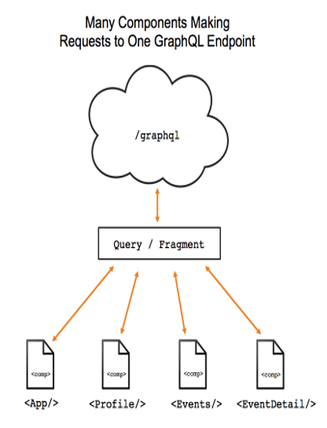
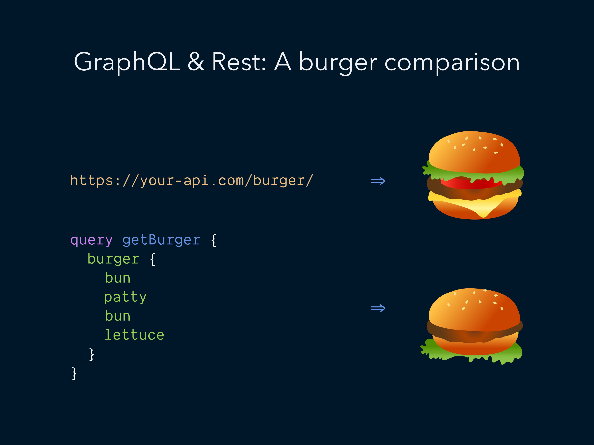
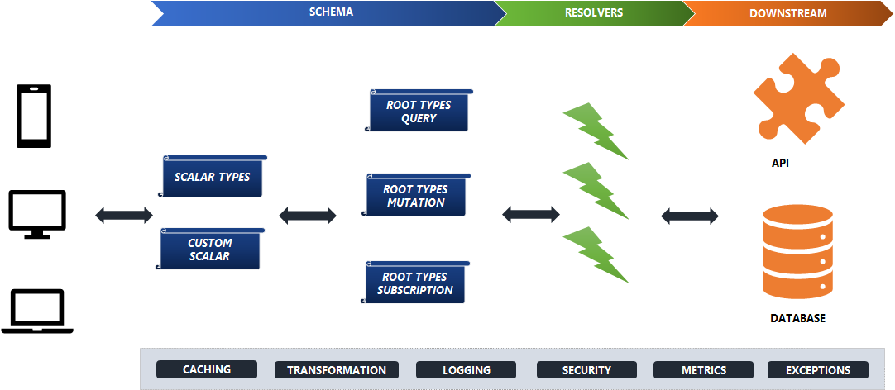
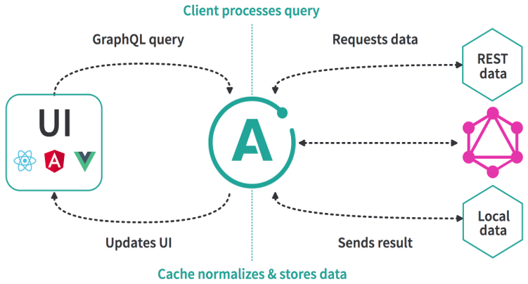
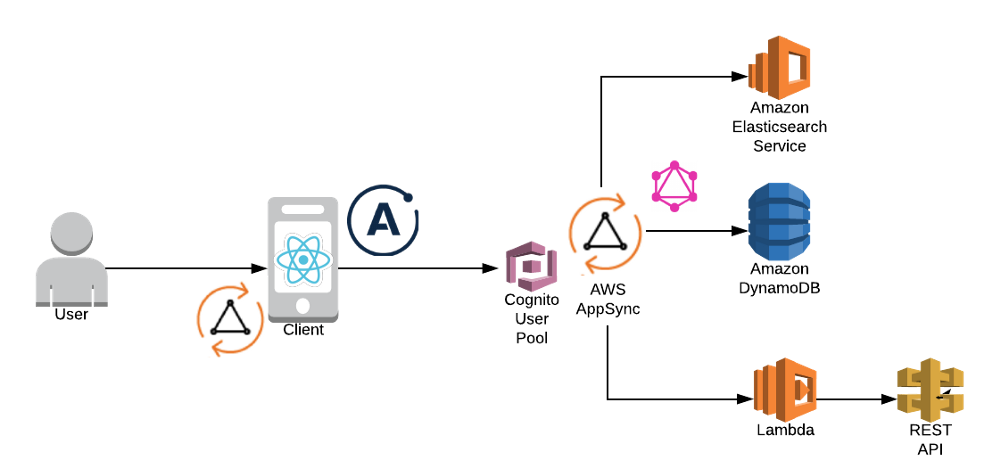
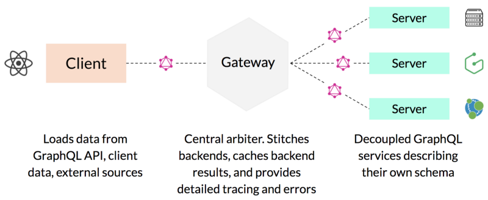

GRAPHQL
Architecture Patterns
Created by Tarun Kumar Sukhu
What is GRAPHQL?
What is GraphQL ? Why all the hype ?

GRAPHQL
An API specification by Facebook
Provides declarative data fetching
Query Language for your API organized in terms of types and fields not endpoints
GraphQL Server exposes a single end point for all queries
Supports multiple languages including JS,Java,Scala,.NET,PHP,Python
REST vs GRAPHQL

REST vs GRAPHQL

Packaged vs Self Service
GraphQL Schema definition Language (SDL)
- root types: Query (Read), Mutation(Write), Subscription(Data Event)
- scalar types: Int, Float, String, Boolean, ID, Enum (specific set of values)
- Each field in a GraphQL schema is backed by a resolver having the same type
- Sample Schema walkthrough.
GraphQL Highlevel View

Client Side View
- Support for multiple different functionality modules as part of Apollo Links
- Caching
- Diverse Transports
- Live Queries
- Retries
- Pagination
- Prefetching Data
- State Management
- Client Side State Management – Apollo Link State
- Support for React, Angular , Vue
- Sample Apollo client project walkthrough.

GraphQL Introspection
- Get scheme information via GraphQL querys
- Get to know about the entire schema
- Types, Queries, Mutations, Subscriptions available
- Use __schema , __type to get details
- Useful for dynamic discovery of schema

GraphQL Key advantages
- Cleaner data retrival, no adhoc endpoints, lower round trips
- Granular control over data.
- Parallel execution of resource backend requests. Data even for partially failed requests
- Service Caching potential per request , per across requests, batch processing of requests
- Graceful handling of errors, failures
- Organic versioning: Simply add fields when you need or mark them as deprecated when you plan to stop using them.
Common GraphQL Architecture Patterns
Schema Directives for Re-usability
- Modify runtime behavior of your schema
- Code reduction and repitition resolvers
- Cleaner implementation of complex models
-
Usecases:
- Role based permssions
- Data Transformation
- Internationalization
- Attaching auto-resolver directly to the fields
- Caching behavior
- Built In Directives:
- @include(if: Boolean!) include resolution if true
- @skip(if Boolean!) skip resolution if true
- @deprecated(reason: String) mark field as deprecated
const directiveQueries = `
query { Hero($episode: Episode, $withFriends: Boolean!) {
hero(episode: $episode) {
name
longName: String @deprecated(reason: "use name instead")
hello: String @upper
greeting: String @intl
people: [Person] @rest(url: "/api/v1/people")
collaborators: Boolean @auth(requires: ADMIN)
published: Date @date(format: "mmmm d, yyyy")
title: String @length(max: 50)
friends @include(if: $withFriends) {
name
}
}
}
}`
N+1 issue and the DataLoader
- Deeply nested queries can result in multiple queries/API calls for the same data
- Solution : use dataloader by Facebook
- It handles this by
- Caches similar requests
- Debouncing similar requests and then batching then as one request
- `guys` query results in N+1 calls (N calls for each MALE person + 1 nested call) MATT ROZEMAs Blog
const schema = `
type Person {
name: String!
age: Int
gender: Gender
height(unit: HeightUnit = METER) : Float
bestFriend: Person
}
type Query {
guys: [Person]
girls: [Person]
}
enum Gender {
MALE
FEMALE
}
enum HeightUnit {
METER
INCH
}
schema {
query: Query
}
`;
const rootResolvers = {
Query: {
guys(root, _, context) {
return findBy('gender', 'MALE');
},
girls(root, _, context) {
return findBy('gender', 'FEMALE');
}
},
Person: {
name: ({ name }) => name.toUpperCase(),
height: ({ height }, { unit }) =>
unit === 'METER' ? height * 0.0254 : height,
bestFriend: ({ best_friend}) =>
findBy('name', best_friend)
.then(people => people[0]),
},
};
// This `findBy` method simulates a database query.
const findBy = (field, value) => {
console.log(`finding person
with ${field} === ${value}`);
return Promise.resolve(
people.filter(person =>
person[field] === value));
};
const people = [
{
name: 'George',
age: 17,
gender: 'MALE',
height: 72,
best_friend: 'Alexander',
}, {
name: 'Jill',
age: 19,
gender: 'FEMALE',
height: 65,
best_friend: 'Alexander',
}, {
name: 'Alexander',
age: 32,
gender: 'MALE',
height: 68,
best_friend: 'George',
}, {
name: 'Dave',
age: 19,
gender: 'MALE',
height: 58,
best_friend: 'George',
}
];
API Gateway

Can also act as a backend for frontend with UI specific transformations
Serverless Architecture
- API Gateway + Lambda backend (Setup GraphQL on Lambda)
- Can use any serverless provider (Microsoft Azure, Google Cloud Functions, etc.) with GraphQL
- Setup Lambda function handler to route HTTP requests and return the response.
- Define you GraphQL schema
- Setup resolver functions to fetch data from other service (RDS, REST, DynamoDB)

Serverless Architecture with AppSync
- AWS AppSync is a fully managed Serverless GraphQL service for real-time data queries, synchronization, communications and offline programming features.
- Used for large scale real-time data subscriptions
- Provides data updates for offline users as soon as they reconnect
- AppSync Client uses Apollo Client 2.0 under the hood to simplify user authentication, manage offline logic and support real-time subscriptions

Schema Stiching at the API Gatway Layer
- New gateway layer a great place to do stitching
- Connect to multiple downstream graphql servers and distributed schemas
- Resolvers delegate schema resolution calls to distributed GraphQL Servers
- Frontend specific schema stitched together at the API Layer

Gatsby - GraphQL based static site generator
- Support for multiple data sources via plugins
- The data sources are exposed as a GraphQL API Server during build
- Build static websites in ReactJS , HTML5, CSS which pull data from the GraphQL Server
- Gatsby uses webpack and provides OOTB plugins for SSR, PWA , performance optimization , caching
- Gatsby ers-hcl project walkthrough.

Headless CMS powered by GraphQL
- Cosmic.js: is a CaaS based on GraphQL
- GraphCMS: The First Headless CMS Built Around GraphQL
- Mozaik: The next generation headless GraphQL CMS
- Contentful: Node.js library called cf-graphql that enables you to fetch data stored in Contentful using GraphQL.
- WPGraphQL: A free, open-source WordPress plugin that provides an extendable GraphQL schema and API for any WordPress site.

PostGraphile (GraphQL for PostGres) & Neo4J GraphQL extension
- PostGraphile: Takes your PostGres database schema and turns it into GraphQL API without any extra work
- Watch this video for more .. Handles Pagination, Cursors, Table relationships , Custom server side functions
- It leverages graphile-build's look-ahead (Solves N+1 issue) features when resolving a GraphQL request
- Result: A single root level query, no matter how nested, is compiled into just one SQL query.
- Neo4j-graphql : is a Neo4j server extension that allows you to turn GraphQL queries into Cypher and run them against your graph data.
- It generates a single Cypher query for any arbitrary GraphQL request (Single DB request)


Prisma Add GraphQL support to backend databases
- Prisma is a performant open-source GraphQL ORM-like layer doing the heavy lifting in your GraphQL server.
- Improves your database workflows and saves you from writing complex SQL queries or the intricacies of working with NoSQL APIs.
- Based on OpenCRUD and supports multiple databases via connectors. Currently supported MySQL.
- Acts as a data access layer in your backend architecture by connecting your API server to your databases
- Prisma servers run as standalone processes which allows for them to be scaled independently from your API server.


Apollo Engine - Cloud Hosted GraphQL gateway
- Engine sits between your clients and your GraphQL serve
- Delivers query caching, error tracking, automatic persisted queries, execution tracing, and schema analytics
- Two parts:
- Engine Proxy: sends aggregated data to the Engine Service
- Engine Service: cloud based management UI for Engine

Summary
- GraphQL technology has been evolving over the last 2+ years and now has reached an inflection point
- The Eco-system around the building production grade GraphQL systems is now well established and growing
- While smaller companies and startups have been taking the lead , larger enterprises are also showing a gradual shift
- GraphQL currently remains driven more from the Frontend community , but we are seeing rapid growth in areas like content management, DaaS
- GraphQL could become a Universal Query Language for designing systems as well
- While major GraphQL growth has been related to the NodeJS and JavaScript , we are seeing growth in other languages including Java, PhP , Go etc.
- GraphQL is likely to be adopted in greenfield (Cloud Native, Microservices) solutions, as well as augment existing REST,Legacy based systems